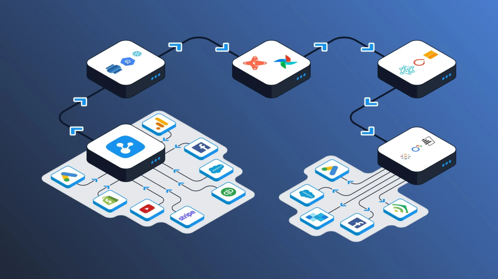

Arquitectura de datos en tiempo real: Conectando Firebase NoSQL con Kotlin y Jetpack Compose
Publicado el: 18 de Junio, 2026

En el ecosistema del desarrollo móvil moderno, la experiencia de usuario está intrínsecamente ligada a la velocidad y la frescura de la información. Cuando construimos aplicaciones Android destinadas al Internet de las Cosas (IoT) o sistemas de monitoreo remoto, los antiguos métodos de actualización manual mediante peticiones HTTP tradicionales ya no son viables.
Una arquitectura robusta exige que los datos fluyan de manera bidireccional y reactiva. Integrar una base de datos NoSQL en la nube como Firebase Realtime Database con un frontend moderno construido en Jetpack Compose y Kotlin nos permite alcanzar este nivel de sincronización con un rendimiento optimizado.
Modelado de datos NoSQL para telemetría física
A diferencia de las bases de datos relacionales tradicionales, Firebase organiza la información en un árbol JSON gigante. Para proyectos que gestionan telemetría (como el seguimiento de dosis de un dispensador inteligente de medicamentos o variables críticas de un sensor de nivel industrial), la estructura de este árbol debe ser lo más plana posible.
Anidar nodos en exceso obliga a la aplicación móvil a descargar datos innecesarios cada vez que realiza una escucha (listener). La práctica recomendada es separar los metadatos del usuario de los registros de telemetría continuos. Por ejemplo, define un nodo independiente para los estados de activación de los motores y otro para el historial, facilitando lecturas limpias y reduciendo drásticamente el consumo de ancho de banda del dispositivo móvil.
El puente asíncrono: Corrutinas de Kotlin y StateFlow
Tradicionalmente, las librerías de Firebase dependían de callbacks tradicionales para notificar cambios en la base de datos, lo que a menudo derivaba en código difícil de mantener (Callback Hell). En el desarrollo nativo actual con Kotlin, la solución elegante es transformar estos listeners en flujos asíncronos utilizando Corrutinas y la API de Flow.
Dentro de tu clase ViewModel, puedes encapsular el listener nativo de Firebase y exponer los datos hacia la interfaz mediante un StateFlow. Esto no solo limpia la arquitectura del software separando la lógica de negocio de la vista, sino que garantiza que las operaciones de red se ejecuten de manera segura en hilos secundarios (como Dispatchers.IO), evitando que la interfaz del usuario sufra congelamientos o tirones visuales.
Optimización de la recomposición en Jetpack Compose
Jetpack Compose redibuja la pantalla basándose en los cambios de estado. Cuando tu microcontrolador físico está enviando telemetría a Firebase de forma constante (por ejemplo, varias veces por segundo), la aplicación móvil recibirá un flujo constante de actualizaciones. Si no gestionas esto correctamente, la aplicación entrará en un bucle de recomposición infinita, drenando la batería del smartphone.
Para evitarlo, utiliza la función collectAsStateWithLifecycle() dentro de tus funciones composables. Esto asegura que la interfaz solo escuche las actualizaciones de Firebase cuando la aplicación esté visible en la pantalla del usuario, pausando el flujo si el usuario bloquea el teléfono o abre otra aplicación. Además, estructurar componentes atómicos e independientes garantiza que solo se redibuje el texto o icono que cambió de valor, manteniendo el rendimiento a una tasa fluida de fotogramas.
Conclusión del flujo reactivo
Dominar la integración de Firebase NoSQL con Jetpack Compose eleva la calidad de tus aplicaciones móviles a un estándar de grado comercial. Crear una tubería de datos limpia, reactiva y respetuosa con el ciclo de vida del sistema operativo es fundamental para ofrecer herramientas de control de hardware fiables y escalables en el tiempo.